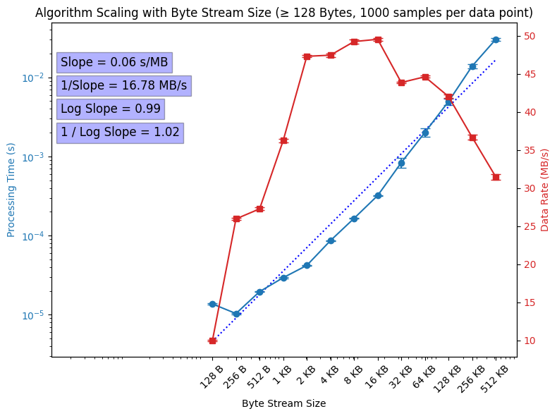

I accidentally discovered there are sometimes errenous packets with extra information...
Invalid packet size: 90 Invalid packet size: 106 Invalid packet size: 90
Invalid packet size: 90
Invalid packet size: 106
Invalid packet size: 90They seem to have a multiplicity of 16 extra bytes and they throw off the parsing:
here are some examples:
Channel: 0, Trigger Time: 16047600 Logical Position: 0, Physical Position: 60 Samples: 1518 1473 1471 1492 1489 1498 1471 1469 1442 1476 1504 1504 1467 1492 1423 1474 1487 1513 1516 1485 1512 1495 1486 1494 1468 1494 1472 1024 0 0 0 0 Footer: 0, 0 ------------------------------------------------- Channel: 0, Trigger Time: 16065155 Logical Position: 0, Physical Position: 7 Samples: 1486 1498 1502 1512 1489 1496 1490 1486 1490 1510 1466 1494 1490 1470 1478 1460 1467 1496 1511 1498 1472 1024 0 0 0 0 0 0 0 1460 1504 1496 Footer: 5, 212 ------------------------------------------------- Channel: 0, Trigger Time: 16083744 Logical Position: 0, Physical Position: 58 Samples: 1496 1451 1472 1487 1486 1489 1468 1474 1472 1513 1466 1476 1465 1498 1465 1024 0 0 0 0 0 0 0 1474 1492 1537 1504 1487 1491 1487 1443 1480 Footer: 5, 224 ------------------------------------------------- Channel: 0, Trigger Time: 16101300 Logical Position: 0, Physical Position: 6 Samples: 1530 1478 1437 1521 1487 1518 1476 1474 1486 1024 0 0 0 0 0 0 0 1486 1486 1490 1487 1462 1478 1472 1475 1513 1520 1493 1504 1525 1516 1520 Footer: 5, 238 ------------------------------------------------- Channel: 0, Trigger Time: 16119889 Logical Position: 0, Physical Position: 57 Samples: 1494 1491 1518 1024 0 0 0 0 0 0 0 1517 1465 1500 1504 1468 1504 1506 1510 1463 1484 1492 1515 1494 1512 1542 1516 1492 1502 1503 1496 1464 Footer: 5, 224 -------------------------------------------------
Channel: 0, Trigger Time: 16047600
Logical Position: 0, Physical Position: 60
Samples: 1518 1473 1471 1492 1489 1498 1471 1469 1442 1476 1504 1504 1467 1492 1423 1474 1487 1513 1516 1485 1512 1495 1486 1494 1468 1494 1472 1024 0 0 0 0
Footer: 0, 0
-------------------------------------------------
Channel: 0, Trigger Time: 16065155
Logical Position: 0, Physical Position: 7
Samples: 1486 1498 1502 1512 1489 1496 1490 1486 1490 1510 1466 1494 1490 1470 1478 1460 1467 1496 1511 1498 1472 1024 0 0 0 0 0 0 0 1460 1504 1496
Footer: 5, 212
-------------------------------------------------
Channel: 0, Trigger Time: 16083744
Logical Position: 0, Physical Position: 58
Samples: 1496 1451 1472 1487 1486 1489 1468 1474 1472 1513 1466 1476 1465 1498 1465 1024 0 0 0 0 0 0 0 1474 1492 1537 1504 1487 1491 1487 1443 1480
Footer: 5, 224
-------------------------------------------------
Channel: 0, Trigger Time: 16101300
Logical Position: 0, Physical Position: 6
Samples: 1530 1478 1437 1521 1487 1518 1476 1474 1486 1024 0 0 0 0 0 0 0 1486 1486 1490 1487 1462 1478 1472 1475 1513 1520 1493 1504 1525 1516 1520
Footer: 5, 238
-------------------------------------------------
Channel: 0, Trigger Time: 16119889
Logical Position: 0, Physical Position: 57
Samples: 1494 1491 1518 1024 0 0 0 0 0 0 0 1517 1465 1500 1504 1468 1504 1506 1510 1463 1484 1492 1515 1494 1512 1542 1516 1492 1502 1503 1496 1464
Footer: 5, 224
-------------------------------------------------It seems like zome zeros are just randomly inserted into the packet? Not sure what's going on here? Something with UDP???
By "optomizing" the packet reading, I'm able to read in packets at around 300 MB/s is C++ (corresponding to an actual trace data rate of ~48 data bytes/72 packet byes ~ 2/3, then 2/3 * 300 MB/s ~ 200 MB/s):
Running the executable... File reading time: 0.0528991 seconds Error count: 1004 Total count: 14225 Error Percentage: 7.058% Chunking time: 0.00230152 seconds Raw parsing time: 0.000647574 seconds Non-raw parsing time: 0.00704113 seconds First 5 raw parsed packets: Channel: 0, Trigger Time: 16031077 Logical Position: 0, Physical Position: 29 Raw Samples: 5 216 5 231 5 223 5 235 5 194 5 209 5 212 5 190 5 208 5 210 5 206 5 187 5 184 5 186 5 200 5 214 5 184 5 226 5 217 5 205 5 209 5 209 5 216 5 236 5 228 5 164 5 202 5 184 5 214 5 206 5 209 6 23 Footer: 250, 90 ------------------------------------------------- Channel: 0, Trigger Time: 16032109 Logical Position: 0, Physical Position: 7 Raw Samples: 5 209 5 218 5 224 5 234 5 208 5 217 5 210 5 208 5 212 5 228 5 188 5 210 5 211 5 191 5 200 5 181 5 187 5 216 5 232 5 218 5 188 5 181 5 225 5 220 5 212 5 207 5 240 5 214 5 224 5 215 5 214 5 238 Footer: 250, 90 ------------------------------------------------- Channel: 0, Trigger Time: 16033142 Logical Position: 0, Physical Position: 48 Raw Samples: 5 229 5 175 5 162 5 239 5 248 5 201 5 235 5 214 5 226 5 217 5 200 5 214 5 184 5 197 5 209 5 203 5 229 5 231 5 211 5 204 5 214 5 208 5 161 5 188 5 192 5 214 5 194 5 186 5 187 5 206 5 247 5 213 Footer: 250, 90 ------------------------------------------------- Channel: 0, Trigger Time: 16034175 Logical Position: 0, Physical Position: 27 Raw Samples: 5 198 5 226 5 212 5 240 5 178 5 215 5 187 5 189 5 196 5 224 5 232 5 206 5 188 5 214 5 238 5 224 5 211 5 243 5 236 5 214 5 222 5 181 5 172 5 163 5 211 5 240 5 232 5 215 5 208 5 220 5 193 5 242 Footer: 250, 90 ------------------------------------------------- Channel: 0, Trigger Time: 16035207 Logical Position: 0, Physical Position: 5 Raw Samples: 5 223 5 210 5 165 5 232 5 211 5 211 5 216 5 216 5 163 5 225 5 234 5 222 5 203 5 162 5 216 5 210 5 210 5 214 5 222 5 232 5 223 5 208 5 228 5 211 5 210 5 219 5 205 5 174 5 178 5 194 5 206 5 231 Footer: 250, 90 ------------------------------------------------- First 5 non-raw parsed packets: Channel: 0, Trigger Time: 16031077 Logical Position: 0, Physical Position: 29 Samples: 1496 1511 1503 1515 1474 1489 1492 1470 1488 1490 1486 1467 1464 1466 1480 1494 1464 1506 1497 1485 1489 1489 1496 1516 1508 1444 1482 1464 1494 1486 1489 1559 Footer: 250, 90 ------------------------------------------------- Channel: 0, Trigger Time: 16032109 Logical Position: 0, Physical Position: 7 Samples: 1489 1498 1504 1514 1488 1497 1490 1488 1492 1508 1468 1490 1491 1471 1480 1461 1467 1496 1512 1498 1468 1461 1505 1500 1492 1487 1520 1494 1504 1495 1494 1518 Footer: 250, 90 ------------------------------------------------- Channel: 0, Trigger Time: 16033142 Logical Position: 0, Physical Position: 48 Samples: 1509 1455 1442 1519 1528 1481 1515 1494 1506 1497 1480 1494 1464 1477 1489 1483 1509 1511 1491 1484 1494 1488 1441 1468 1472 1494 1474 1466 1467 1486 1527 1493 Footer: 250, 90 ------------------------------------------------- Channel: 0, Trigger Time: 16034175 Logical Position: 0, Physical Position: 27 Samples: 1478 1506 1492 1520 1458 1495 1467 1469 1476 1504 1512 1486 1468 1494 1518 1504 1491 1523 1516 1494 1502 1461 1452 1443 1491 1520 1512 1495 1488 1500 1473 1522 Footer: 250, 90 ------------------------------------------------- Channel: 0, Trigger Time: 16035207 Logical Position: 0, Physical Position: 5 Samples: 1503 1490 1445 1512 1491 1491 1496 1496 1443 1505 1514 1502 1483 1442 1496 1490 1490 1494 1502 1512 1503 1488 1508 1491 1490 1499 1485 1454 1458 1474 1486 1511 Footer: 250, 90 ------------------------------------------------- Error count: 1004 Total count: 14225 Error Percentage: 7.058% Error count: 1004 Total count: 14225 Error Percentage: 7.058% Raw parsing results: Total packets processed (raw): 13221 Packets processed per second (raw): 4.31875e+06 Total data rate (raw): 296.545 MB/s Effective data rate (raw): 197.697 MB/s Total data processed (raw): 0.907814 MB Non-raw parsing results: Total packets processed (non-raw): 13221 Packets processed per second (non-raw): 1.30742e+06 Total data rate (non-raw): 89.7736 MB/s Effective data rate (non-raw): 59.8491 MB/s Total data processed (non-raw): 0.907814 MB
Running the executable...
File reading time: 0.0528991 seconds
Error count: 1004
Total count: 14225
Error Percentage: 7.058%
Chunking time: 0.00230152 seconds
Raw parsing time: 0.000647574 seconds
Non-raw parsing time: 0.00704113 seconds
First 5 raw parsed packets:
Channel: 0, Trigger Time: 16031077
Logical Position: 0, Physical Position: 29
Raw Samples: 5 216 5 231 5 223 5 235 5 194 5 209 5 212 5 190 5 208 5 210 5 206 5 187 5 184 5 186 5 200 5 214 5 184 5 226 5 217 5 205 5 209 5 209 5 216 5 236 5 228 5 164 5 202 5 184 5 214 5 206 5 209 6 23
Footer: 250, 90
-------------------------------------------------
Channel: 0, Trigger Time: 16032109
Logical Position: 0, Physical Position: 7
Raw Samples: 5 209 5 218 5 224 5 234 5 208 5 217 5 210 5 208 5 212 5 228 5 188 5 210 5 211 5 191 5 200 5 181 5 187 5 216 5 232 5 218 5 188 5 181 5 225 5 220 5 212 5 207 5 240 5 214 5 224 5 215 5 214 5 238
Footer: 250, 90
-------------------------------------------------
Channel: 0, Trigger Time: 16033142
Logical Position: 0, Physical Position: 48
Raw Samples: 5 229 5 175 5 162 5 239 5 248 5 201 5 235 5 214 5 226 5 217 5 200 5 214 5 184 5 197 5 209 5 203 5 229 5 231 5 211 5 204 5 214 5 208 5 161 5 188 5 192 5 214 5 194 5 186 5 187 5 206 5 247 5 213
Footer: 250, 90
-------------------------------------------------
Channel: 0, Trigger Time: 16034175
Logical Position: 0, Physical Position: 27
Raw Samples: 5 198 5 226 5 212 5 240 5 178 5 215 5 187 5 189 5 196 5 224 5 232 5 206 5 188 5 214 5 238 5 224 5 211 5 243 5 236 5 214 5 222 5 181 5 172 5 163 5 211 5 240 5 232 5 215 5 208 5 220 5 193 5 242
Footer: 250, 90
-------------------------------------------------
Channel: 0, Trigger Time: 16035207
Logical Position: 0, Physical Position: 5
Raw Samples: 5 223 5 210 5 165 5 232 5 211 5 211 5 216 5 216 5 163 5 225 5 234 5 222 5 203 5 162 5 216 5 210 5 210 5 214 5 222 5 232 5 223 5 208 5 228 5 211 5 210 5 219 5 205 5 174 5 178 5 194 5 206 5 231
Footer: 250, 90
-------------------------------------------------
First 5 non-raw parsed packets:
Channel: 0, Trigger Time: 16031077
Logical Position: 0, Physical Position: 29
Samples: 1496 1511 1503 1515 1474 1489 1492 1470 1488 1490 1486 1467 1464 1466 1480 1494 1464 1506 1497 1485 1489 1489 1496 1516 1508 1444 1482 1464 1494 1486 1489 1559
Footer: 250, 90
-------------------------------------------------
Channel: 0, Trigger Time: 16032109
Logical Position: 0, Physical Position: 7
Samples: 1489 1498 1504 1514 1488 1497 1490 1488 1492 1508 1468 1490 1491 1471 1480 1461 1467 1496 1512 1498 1468 1461 1505 1500 1492 1487 1520 1494 1504 1495 1494 1518
Footer: 250, 90
-------------------------------------------------
Channel: 0, Trigger Time: 16033142
Logical Position: 0, Physical Position: 48
Samples: 1509 1455 1442 1519 1528 1481 1515 1494 1506 1497 1480 1494 1464 1477 1489 1483 1509 1511 1491 1484 1494 1488 1441 1468 1472 1494 1474 1466 1467 1486 1527 1493
Footer: 250, 90
-------------------------------------------------
Channel: 0, Trigger Time: 16034175
Logical Position: 0, Physical Position: 27
Samples: 1478 1506 1492 1520 1458 1495 1467 1469 1476 1504 1512 1486 1468 1494 1518 1504 1491 1523 1516 1494 1502 1461 1452 1443 1491 1520 1512 1495 1488 1500 1473 1522
Footer: 250, 90
-------------------------------------------------
Channel: 0, Trigger Time: 16035207
Logical Position: 0, Physical Position: 5
Samples: 1503 1490 1445 1512 1491 1491 1496 1496 1443 1505 1514 1502 1483 1442 1496 1490 1490 1494 1502 1512 1503 1488 1508 1491 1490 1499 1485 1454 1458 1474 1486 1511
Footer: 250, 90
-------------------------------------------------
Error count: 1004
Total count: 14225
Error Percentage: 7.058%
Error count: 1004
Total count: 14225
Error Percentage: 7.058%
Raw parsing results:
Total packets processed (raw): 13221
Packets processed per second (raw): 4.31875e+06
Total data rate (raw): 296.545 MB/s
Effective data rate (raw): 197.697 MB/s
Total data processed (raw): 0.907814 MB
Non-raw parsing results:
Total packets processed (non-raw): 13221
Packets processed per second (non-raw): 1.30742e+06
Total data rate (non-raw): 89.7736 MB/s
Effective data rate (non-raw): 59.8491 MB/s
Total data processed (non-raw): 0.907814 MBI tried to see if I could use pybind to call tehse same methods in python with similar rates. I could not:
Total packets processed: 13221 Packets processed per second: 84074.5658 Total data rate: 5.7729 MB/s Effective data rate: 3.8486 MB/s Total data processed: 0.9078 MB
Total packets processed: 13221
Packets processed per second: 84074.5658
Total data rate: 5.7729 MB/s
Effective data rate: 3.8486 MB/s
Total data processed: 0.9078 MBIt's somehow even slower than doing it in python by hand. Not sure why...
I also computed how many packets have an error (i.e. are not size 74) when chunking packets and I get:
Error count: 1004 Total count: 14225 Error Percentage: 7.058%
Error count: 1004
Total count: 14225
Error Percentage: 7.058%This becomes difficult to work around when events are constructed from many packets. You can calculate the chance that a full event is errorless with formula:
\begin{align*}
& P(w,c,E) = (1-E)^{wc}
\end{align*}where w \equiv windows, c\equiv channels, and E\equiv Error rate.
For example P(w=1,c=32,E=0.07)\approx 0.10. So even in a very optomistic estimate of our use case, most events will still contain an error.
So I must do some error scrubbing to correct for this.
It seems every packet with an error has one or multiple copies of this 16 byte string "randomly" jamed in there:
b"\x04\x00\x00\x00\x00\x00\x00\x00\x00\x00\x00\x00\x00\x00\x00\x00"
My best guess is this is some "heartbeat" signal?
Here's an example packet:
Packet: b'\x0e\x03\x0bV\x08\x93\x00\x01\x07\x00\x06\xe6\x06\xf0\x06\xe8\x078\x06\xf0\x06\xcb\x06\xdd\x07\x02\x06\xe7\x06\xc4\x06\xf2\x06\xb5\x06\xec\x06\xea\x07\x06\x06\xe4\x06\xed\x06\xe3\x06\xea\x06\xe6\x06\xda\x06\xf8\x07\x05\x06\xe0\x06\xea\x06\xe8\x06\xd2\x06\xcb\x06\xd6\x06\xe5\x06\xe8\xfaZ'
Packet: b'\x0e\x03\x0bV\x08\x93\x00\x01\x07\x00\x06\xe6\x06\xf0\x06\xe8\x078\x06\xf0\x06\xcb\x06\xdd\x07\x02\x06\xe7\x06\xc4\x06\xf2\x06\xb5\x06\xec\x06\xea\x07\x06\x06\xe4\x06\xed\x06\xe3\x06\xea\x06\xe6\x06\xda\x06\xf8\x07\x05\x06\xe0\x06\xea\x06\xe8\x06\xd2\x06\xcb\x06\xd6\x06\xe5\x06\xe8\xfaZ'I'm pretty sure the start being 0x0E is erroneous . This is a bad header because it can show up in normal operation. example 0x0E 0x0E if a valid 4 bytes of digitized data. If we could assume there are exactly 72 bytes preceeding the trailer word 0xFA 0x5A (which prints out as xfaZ becuase 0x5A is the unicode character for Z), then this wouldn't be a problem. However, becuase b"\x04\x00\x00\x00\x00\x00\x00\x00\x00\x00\x00\x00\x00\x00\x00\x00" are randomly crammed in the data sometimes, we can't do that. I.e. there could be a case where we see 0x0E and 0xFA 0x5A seperated by exactly 72 bytes, but 0x0E actually corresponds to data, not a header word.
If this header word was 0xE0, we could get around this problem, because b"\x04\x00\x00\x00\x00\x00\x00\x00\x00\x00\x00\x00\x00\x00\x00\x00" only shifts the data by an even amount, and while 0xE0 can show up naturally in odd bytes, it cannot in even bytes (All data is 12 bytes and must start with 0, so the even "data" bytes must start with 0). This would mean we could look for the trailer word 0xFA 0x5A and look backwards 72 + 16\cdot m bytes where m is some integer. Eventually we would find a 0xE0. Unless b"\x04\x00\x00\x00\x00\x00\x00\x00\x00\x00\x00\x00\x00\x00\x00\x00" can show up between the two trailer bytes 0xFA 0x5A, then we'd have a problem.
All this is to say is seems the only solution is to scrub all occurences of b"\x04\x00\x00\x00\x00\x00\x00\x00\x00\x00\x00\x00\x00\x00\x00\x00" out before splitting the data into packets, which causes the efficiency to take a hit, but the results seem to indicate this cleans the data up:
Total packets: 13837 Skipped packets: 1 Error Percentage: 0.01%
Total packets: 13837
Skipped packets: 1
Error Percentage: 0.01%Where the last packet is skipped because it's cut off.
Python can handle parsing packets in a more efficient "chopping" manner at around 16 MB/s. Still way too slow, C++ is needed.

Note: when I say "error bytes" I mean the sequence:
vector<unsigned char> error_bytes = {
0x04, 0x00, 0x00, 0x00, 0x00, 0x00, 0x00, 0x00,
0x00, 0x00, 0x00, 0x00, 0x00, 0x00, 0x00, 0x00
};vector<unsigned char> error_bytes = {
0x04, 0x00, 0x00, 0x00, 0x00, 0x00, 0x00, 0x00,
0x00, 0x00, 0x00, 0x00, 0x00, 0x00, 0x00, 0x00
};that shows up seemingly "randomly" in data packets.
I was able to very slightly speed things up (~20%) by only "scrubbing" packets that have errors as opposed to the whole bytestream. The splitting into packets algorithm is now the bottleneck because it has to go through a series of steps to clean up errors. It goes like this:
packet_length bytes, and append the packet to list of split packets, then go back to step 2.packet_length bytes, and append the packet to list of split packets, then go back to step 2..Old Performance Example:
(base) jack@DESKTOP-FFN8B5L:~/cpp_projects/nalu_packet_collection_test/scripts$ ./run_test.sh Running the executable... --- General Processing Stats --- Time taken to read binary file: 0.000708517 seconds Time taken to scrub byte stream: 0.00535157 seconds Time taken to split packets: 0.00218371 seconds Time taken to parse packets: 0.000847597 seconds --- Standard Event Collection --- Collected events: 15 Time taken to collect events (standard mode): 0.00327157 seconds Event lengths (packets per event): Event 14: 800 packets Event 13: 992 packets Event 12: 992 packets Event 11: 992 packets Event 10: 992 packets Event 9: 992 packets Event 8: 992 packets Event 7: 992 packets Event 6: 992 packets Event 5: 992 packets Event 4: 992 packets Event 3: 992 packets Event 2: 992 packets Event 1: 992 packets Event 0: 140 packets --- Lazy Mode Event Collection --- Collected events: 15 Time taken to collect events (lazy mode): 0.00103559 seconds Event lengths (packets per event): Event 15: 800 packets Event 14: 992 packets Event 13: 992 packets Event 12: 992 packets Event 11: 992 packets Event 10: 992 packets Event 9: 992 packets Event 8: 992 packets Event 7: 992 packets Event 6: 992 packets Event 5: 992 packets Event 4: 992 packets Event 3: 992 packets Event 2: 992 packets Event 1: 140 packets --- Data Rates --- Standard Mode: Total processing time: 0.012363 seconds Full data rate: 76.8459 MB/s True data rate: 51.2306 MB/s Lazy Mode: Total processing time: 0.010127 seconds Full data rate: 93.813 MB/s True data rate: 62.542 MB/s
(base) jack@DESKTOP-FFN8B5L:~/cpp_projects/nalu_packet_collection_test/scripts$ ./run_test.sh
Running the executable...
--- General Processing Stats ---
Time taken to read binary file: 0.000708517 seconds
Time taken to scrub byte stream: 0.00535157 seconds
Time taken to split packets: 0.00218371 seconds
Time taken to parse packets: 0.000847597 seconds
--- Standard Event Collection ---
Collected events: 15
Time taken to collect events (standard mode): 0.00327157 seconds
Event lengths (packets per event):
Event 14: 800 packets
Event 13: 992 packets
Event 12: 992 packets
Event 11: 992 packets
Event 10: 992 packets
Event 9: 992 packets
Event 8: 992 packets
Event 7: 992 packets
Event 6: 992 packets
Event 5: 992 packets
Event 4: 992 packets
Event 3: 992 packets
Event 2: 992 packets
Event 1: 992 packets
Event 0: 140 packets
--- Lazy Mode Event Collection ---
Collected events: 15
Time taken to collect events (lazy mode): 0.00103559 seconds
Event lengths (packets per event):
Event 15: 800 packets
Event 14: 992 packets
Event 13: 992 packets
Event 12: 992 packets
Event 11: 992 packets
Event 10: 992 packets
Event 9: 992 packets
Event 8: 992 packets
Event 7: 992 packets
Event 6: 992 packets
Event 5: 992 packets
Event 4: 992 packets
Event 3: 992 packets
Event 2: 992 packets
Event 1: 140 packets
--- Data Rates ---
Standard Mode:
Total processing time: 0.012363 seconds
Full data rate: 76.8459 MB/s
True data rate: 51.2306 MB/s
Lazy Mode:
Total processing time: 0.010127 seconds
Full data rate: 93.813 MB/s
True data rate: 62.542 MB/sNew Performance Example:
(base) jack@DESKTOP-FFN8B5L:~/cpp_projects/nalu_packet_collection_test/scripts$ ./run_test.sh Running the executable... --- General Processing Stats --- Time taken to read binary file: 0.000612517 seconds Time taken to split packets: 0.00529511 seconds Time taken to parse packets: 0.000746628 seconds --- Standard Event Collection --- Collected events: 15 Time taken to collect events (standard mode): 0.00282787 seconds Event lengths (packets per event): Event 14: 800 packets Event 13: 992 packets Event 12: 992 packets Event 11: 992 packets Event 10: 992 packets Event 9: 992 packets Event 8: 992 packets Event 7: 992 packets Event 6: 992 packets Event 5: 992 packets Event 4: 992 packets Event 3: 992 packets Event 2: 992 packets Event 1: 992 packets Event 0: 139 packets --- Lazy Mode Event Collection --- Collected events: 15 Time taken to collect events (lazy mode): 0.00103136 seconds Event lengths (packets per event): Event 15: 800 packets Event 14: 992 packets Event 13: 992 packets Event 12: 992 packets Event 11: 992 packets Event 10: 992 packets Event 9: 992 packets Event 8: 992 packets Event 7: 992 packets Event 6: 992 packets Event 5: 992 packets Event 4: 992 packets Event 3: 992 packets Event 2: 992 packets Event 1: 139 packets --- Data Rates --- Standard Mode: Total processing time: 0.00948212 seconds Full data rate: 100.186 MB/s True data rate: 66.7905 MB/s Lazy Mode: Total processing time: 0.00768562 seconds Full data rate: 123.604 MB/s True data rate: 82.4027 MB/s
(base) jack@DESKTOP-FFN8B5L:~/cpp_projects/nalu_packet_collection_test/scripts$ ./run_test.sh
Running the executable...
--- General Processing Stats ---
Time taken to read binary file: 0.000612517 seconds
Time taken to split packets: 0.00529511 seconds
Time taken to parse packets: 0.000746628 seconds
--- Standard Event Collection ---
Collected events: 15
Time taken to collect events (standard mode): 0.00282787 seconds
Event lengths (packets per event):
Event 14: 800 packets
Event 13: 992 packets
Event 12: 992 packets
Event 11: 992 packets
Event 10: 992 packets
Event 9: 992 packets
Event 8: 992 packets
Event 7: 992 packets
Event 6: 992 packets
Event 5: 992 packets
Event 4: 992 packets
Event 3: 992 packets
Event 2: 992 packets
Event 1: 992 packets
Event 0: 139 packets
--- Lazy Mode Event Collection ---
Collected events: 15
Time taken to collect events (lazy mode): 0.00103136 seconds
Event lengths (packets per event):
Event 15: 800 packets
Event 14: 992 packets
Event 13: 992 packets
Event 12: 992 packets
Event 11: 992 packets
Event 10: 992 packets
Event 9: 992 packets
Event 8: 992 packets
Event 7: 992 packets
Event 6: 992 packets
Event 5: 992 packets
Event 4: 992 packets
Event 3: 992 packets
Event 2: 992 packets
Event 1: 139 packets
--- Data Rates ---
Standard Mode:
Total processing time: 0.00948212 seconds
Full data rate: 100.186 MB/s
True data rate: 66.7905 MB/s
Lazy Mode:
Total processing time: 0.00768562 seconds
Full data rate: 123.604 MB/s
True data rate: 82.4027 MB/sIt seems there are other types of "error byte" sequences, take this for example:
(base) jack@DESKTOP-FFN8B5L:~/cpp_projects/nalu_packet_collection_test/scripts$ ./run_test.sh Running the executable... Malformed packet at: 88366 Malformed packet length: 90 bytes Malformed packet bytes: e 0 0 bc 3 57 0 37 5 a0 5 e6 5 be 5 ea e 0 f 49 d 65 0 1d 5 d8 5 e7 5 df 5 eb 5 c2 5 d1 5 d4 5 be 5 d0 5 d2 5 ce 5 bb 5 b8 5 ba 5 c8 5 d6 5 b8 5 e2 5 d9 5 cd 5 d1 5 d1 5 d8 5 ec 5 e4 5 a4 5 ca 5 b8 5 d6 5 ce 5 d1 6 17 fa 5a Malformed packet at: 176766 Malformed packet length: 90 bytes Malformed packet bytes: e 0 0 bc 3 57 0 37 5 a0 5 e6 5 be 5 ea e 0 f 49 d 65 0 1d 5 d8 5 e7 5 df 5 eb 5 c2 5 d1 5 d4 5 be 5 d0 5 d2 5 ce 5 bb 5 b8 5 ba 5 c8 5 d6 5 b8 5 e2 5 d9 5 cd 5 d1 5 d1 5 d8 5 ec 5 e4 5 a4 5 ca 5 b8 5 d6 5 ce 5 d1 6 17 fa 5a Malformed packet at: 265166 Malformed packet length: 90 bytes Malformed packet bytes: e 0 0 bc 3 57 0 37 5 a0 5 e6 5 be 5 ea e 0 f 49 d 65 0 1d 5 d8 5 e7 5 df 5 eb 5 c2 5 d1 5 d4 5 be 5 d0 5 d2 5 ce 5 bb 5 b8 5 ba 5 c8 5 d6 5 b8 5 e2 5 d9 5 cd 5 d1 5 d1 5 d8 5 ec 5 e4 5 a4 5 ca 5 b8 5 d6 5 ce 5 d1 6 17 fa 5a Malformed packet at: 353566 Malformed packet length: 90 bytes Malformed packet bytes: e 0 0 bc 3 57 0 37 5 a0 5 e6 5 be 5 ea e 0 f 49 d 65 0 1d 5 d8 5 e7 5 df 5 eb 5 c2 5 d1 5 d4 5 be 5 d0 5 d2 5 ce 5 bb 5 b8 5 ba 5 c8 5 d6 5 b8 5 e2 5 d9 5 cd 5 d1 5 d1 5 d8 5 ec 5 e4 5 a4 5 ca 5 b8 5 d6 5 ce 5 d1 6 17 fa 5a Malformed packet at: 443018 Malformed packet length: 78 bytes Malformed packet bytes: e 0 0 c0 e 0 f 49 d 65 0 1d 5 d8 5 e7 5 df 5 eb 5 c2 5 d1 5 d4 5 be 5 d0 5 d2 5 ce 5 bb 5 b8 5 ba 5 c8 5 d6 5 b8 5 e2 5 d9 5 cd 5 d1 5 d1 5 d8 5 ec 5 e4 5 a4 5 ca 5 b8 5 d6 5 ce 5 d1 6 17 fa 5a Malformed packet at: 532458 Malformed packet length: 78 bytes Malformed packet bytes: e 0 0 c0 e 0 f 49 d 65 0 1d 5 d8 5 e7 5 df 5 eb 5 c2 5 d1 5 d4 5 be 5 d0 5 d2 5 ce 5 bb 5 b8 5 ba 5 c8 5 d6 5 b8 5 e2 5 d9 5 cd 5 d1 5 d1 5 d8 5 ec 5 e4 5 a4 5 ca 5 b8 5 d6 5 ce 5 d1 6 17 fa 5a Malformed packet at: 621898 Malformed packet length: 78 bytes Malformed packet bytes: e 0 0 c0 e 0 f 49 d 65 0 1d 5 d8 5 e7 5 df 5 eb 5 c2 5 d1 5 d4 5 be 5 d0 5 d2 5 ce 5 bb 5 b8 5 ba 5 c8 5 d6 5 b8 5 e2 5 d9 5 cd 5 d1 5 d1 5 d8 5 ec 5 e4 5 a4 5 ca 5 b8 5 d6 5 ce 5 d1 6 17 fa 5a Malformed packet at: 711338 Malformed packet length: 78 bytes Malformed packet bytes: e 0 0 c0 e 0 f 49 d 65 0 1d 5 d8 5 e7 5 df 5 eb 5 c2 5 d1 5 d4 5 be 5 d0 5 d2 5 ce 5 bb 5 b8 5 ba 5 c8 5 d6 5 b8 5 e2 5 d9 5 cd 5 d1 5 d1 5 d8 5 ec 5 e4 5 a4 5 ca 5 b8 5 d6 5 ce 5 d1 6 17 fa 5a Malformed packet at: 800778 Malformed packet length: 78 bytes Malformed packet bytes: e 0 0 c0 e 0 f 49 d 65 0 1d 5 d8 5 e7 5 df 5 eb 5 c2 5 d1 5 d4 5 be 5 d0 5 d2 5 ce 5 bb 5 b8 5 ba 5 c8 5 d6 5 b8 5 e2 5 d9 5 cd 5 d1 5 d1 5 d8 5 ec 5 e4 5 a4 5 ca 5 b8 5 d6 5 ce 5 d1 6 17 fa 5a Malformed packet at: 890218 Malformed packet length: 78 bytes Malformed packet bytes: e 0 0 c0 e 0 f 49 d 65 0 1d 5 d8 5 e7 5 df 5 eb 5 c2 5 d1 5 d4 5 be 5 d0 5 d2 5 ce 5 bb 5 b8 5 ba 5 c8 5 d6 5 b8 5 e2 5 d9 5 cd 5 d1 5 d1 5 d8 5 ec 5 e4 5 a4 5 ca 5 b8 5 d6 5 ce 5 d1 6 17 fa 5a Malformed packet at: 979658 Malformed packet length: 78 bytes Malformed packet bytes: e 0 0 c0 e 0 f 49 d 65 0 1d 5 d8 5 e7 5 df 5 eb 5 c2 5 d1 5 d4 5 be 5 d0 5 d2 5 ce 5 bb 5 b8 5 ba 5 c8 5 d6 5 b8 5 e2 5 d9 5 cd 5 d1 5 d1 5 d8 5 ec 5 e4 5 a4 5 ca 5 b8 5 d6 5 ce 5 d1 6 17 fa 5a
(base) jack@DESKTOP-FFN8B5L:~/cpp_projects/nalu_packet_collection_test/scripts$ ./run_test.sh
Running the executable...
Malformed packet at: 88366
Malformed packet length: 90 bytes
Malformed packet bytes: e 0 0 bc 3 57 0 37 5 a0 5 e6 5 be 5 ea e 0 f 49 d 65 0 1d 5 d8 5 e7 5 df 5 eb 5 c2 5 d1 5 d4 5 be 5 d0 5 d2 5 ce 5 bb 5 b8 5 ba 5 c8 5 d6 5 b8 5 e2 5 d9 5 cd 5 d1 5 d1 5 d8 5 ec 5 e4 5 a4 5 ca 5 b8 5 d6 5 ce 5 d1 6 17 fa 5a
Malformed packet at: 176766
Malformed packet length: 90 bytes
Malformed packet bytes: e 0 0 bc 3 57 0 37 5 a0 5 e6 5 be 5 ea e 0 f 49 d 65 0 1d 5 d8 5 e7 5 df 5 eb 5 c2 5 d1 5 d4 5 be 5 d0 5 d2 5 ce 5 bb 5 b8 5 ba 5 c8 5 d6 5 b8 5 e2 5 d9 5 cd 5 d1 5 d1 5 d8 5 ec 5 e4 5 a4 5 ca 5 b8 5 d6 5 ce 5 d1 6 17 fa 5a
Malformed packet at: 265166
Malformed packet length: 90 bytes
Malformed packet bytes: e 0 0 bc 3 57 0 37 5 a0 5 e6 5 be 5 ea e 0 f 49 d 65 0 1d 5 d8 5 e7 5 df 5 eb 5 c2 5 d1 5 d4 5 be 5 d0 5 d2 5 ce 5 bb 5 b8 5 ba 5 c8 5 d6 5 b8 5 e2 5 d9 5 cd 5 d1 5 d1 5 d8 5 ec 5 e4 5 a4 5 ca 5 b8 5 d6 5 ce 5 d1 6 17 fa 5a
Malformed packet at: 353566
Malformed packet length: 90 bytes
Malformed packet bytes: e 0 0 bc 3 57 0 37 5 a0 5 e6 5 be 5 ea e 0 f 49 d 65 0 1d 5 d8 5 e7 5 df 5 eb 5 c2 5 d1 5 d4 5 be 5 d0 5 d2 5 ce 5 bb 5 b8 5 ba 5 c8 5 d6 5 b8 5 e2 5 d9 5 cd 5 d1 5 d1 5 d8 5 ec 5 e4 5 a4 5 ca 5 b8 5 d6 5 ce 5 d1 6 17 fa 5a
Malformed packet at: 443018
Malformed packet length: 78 bytes
Malformed packet bytes: e 0 0 c0 e 0 f 49 d 65 0 1d 5 d8 5 e7 5 df 5 eb 5 c2 5 d1 5 d4 5 be 5 d0 5 d2 5 ce 5 bb 5 b8 5 ba 5 c8 5 d6 5 b8 5 e2 5 d9 5 cd 5 d1 5 d1 5 d8 5 ec 5 e4 5 a4 5 ca 5 b8 5 d6 5 ce 5 d1 6 17 fa 5a
Malformed packet at: 532458
Malformed packet length: 78 bytes
Malformed packet bytes: e 0 0 c0 e 0 f 49 d 65 0 1d 5 d8 5 e7 5 df 5 eb 5 c2 5 d1 5 d4 5 be 5 d0 5 d2 5 ce 5 bb 5 b8 5 ba 5 c8 5 d6 5 b8 5 e2 5 d9 5 cd 5 d1 5 d1 5 d8 5 ec 5 e4 5 a4 5 ca 5 b8 5 d6 5 ce 5 d1 6 17 fa 5a
Malformed packet at: 621898
Malformed packet length: 78 bytes
Malformed packet bytes: e 0 0 c0 e 0 f 49 d 65 0 1d 5 d8 5 e7 5 df 5 eb 5 c2 5 d1 5 d4 5 be 5 d0 5 d2 5 ce 5 bb 5 b8 5 ba 5 c8 5 d6 5 b8 5 e2 5 d9 5 cd 5 d1 5 d1 5 d8 5 ec 5 e4 5 a4 5 ca 5 b8 5 d6 5 ce 5 d1 6 17 fa 5a
Malformed packet at: 711338
Malformed packet length: 78 bytes
Malformed packet bytes: e 0 0 c0 e 0 f 49 d 65 0 1d 5 d8 5 e7 5 df 5 eb 5 c2 5 d1 5 d4 5 be 5 d0 5 d2 5 ce 5 bb 5 b8 5 ba 5 c8 5 d6 5 b8 5 e2 5 d9 5 cd 5 d1 5 d1 5 d8 5 ec 5 e4 5 a4 5 ca 5 b8 5 d6 5 ce 5 d1 6 17 fa 5a
Malformed packet at: 800778
Malformed packet length: 78 bytes
Malformed packet bytes: e 0 0 c0 e 0 f 49 d 65 0 1d 5 d8 5 e7 5 df 5 eb 5 c2 5 d1 5 d4 5 be 5 d0 5 d2 5 ce 5 bb 5 b8 5 ba 5 c8 5 d6 5 b8 5 e2 5 d9 5 cd 5 d1 5 d1 5 d8 5 ec 5 e4 5 a4 5 ca 5 b8 5 d6 5 ce 5 d1 6 17 fa 5a
Malformed packet at: 890218
Malformed packet length: 78 bytes
Malformed packet bytes: e 0 0 c0 e 0 f 49 d 65 0 1d 5 d8 5 e7 5 df 5 eb 5 c2 5 d1 5 d4 5 be 5 d0 5 d2 5 ce 5 bb 5 b8 5 ba 5 c8 5 d6 5 b8 5 e2 5 d9 5 cd 5 d1 5 d1 5 d8 5 ec 5 e4 5 a4 5 ca 5 b8 5 d6 5 ce 5 d1 6 17 fa 5a
Malformed packet at: 979658
Malformed packet length: 78 bytes
Malformed packet bytes: e 0 0 c0 e 0 f 49 d 65 0 1d 5 d8 5 e7 5 df 5 eb 5 c2 5 d1 5 d4 5 be 5 d0 5 d2 5 ce 5 bb 5 b8 5 ba 5 c8 5 d6 5 b8 5 e2 5 d9 5 cd 5 d1 5 d1 5 d8 5 ec 5 e4 5 a4 5 ca 5 b8 5 d6 5 ce 5 d1 6 17 fa 5aThere are two error cases here:
e 0 0 bc 3 57 0 37 5 a0 5 e6 5 be 5 ea at the begininninge 0 0 bc at the beginningWe can correct this by additionally scrubbing for these, but it seems like an exercise in futility if I can't identify every possible error...
Here's an additional malformed packet where I have no idea what's wrong
Malformed packet at: 629116 Malformed packet length: 140 bytes Malformed packet bytes: e 0 f b 9 1 0 2e 6 6 5 b8 5 c2 5 e6 5 d8 5 ee 5 e5 5 e4 5 d5 5 e2 5 d8 5 da 5 b8 5 d3 5 b1 5 c5 5 c7 5 d5 5 d3 5 c4 5 fd 5 f2 5 bd 5 ee 5 d4 5 e7 5 dc 5 d2 5 d7 e 0 d b1 c c9 0 1 5 d6 5 ee 5 e2 5 eb 5 e0 5 e9 5 ca 5 c9 5 ce 5 d2 5 dd 5 ea 5 c2 5 c4 5 db 5 ee 5 dc 5 fe 5 e0 5 d6 5 d4 5 d1 5 f2 5 f6 5 f0 5 fd 5 d0 5 d6 5 f0 5 ec 5 e2 6 8 fa 5a
Malformed packet at: 629116
Malformed packet length: 140 bytes
Malformed packet bytes: e 0 f b 9 1 0 2e 6 6 5 b8 5 c2 5 e6 5 d8 5 ee 5 e5 5 e4 5 d5 5 e2 5 d8 5 da 5 b8 5 d3 5 b1 5 c5 5 c7 5 d5 5 d3 5 c4 5 fd 5 f2 5 bd 5 ee 5 d4 5 e7 5 dc 5 d2 5 d7 e 0 d b1 c c9 0 1 5 d6 5 ee 5 e2 5 eb 5 e0 5 e9 5 ca 5 c9 5 ce 5 d2 5 dd 5 ea 5 c2 5 c4 5 db 5 ee 5 dc 5 fe 5 e0 5 d6 5 d4 5 d1 5 f2 5 f6 5 f0 5 fd 5 d0 5 d6 5 f0 5 ec 5 e2 6 8 fa 5aThese additional cases
I think I was able to get around bytes being jammed in between packets with this function
void handle_scrubbed_segment(std::vector<uint8_t>& scrubbed_segment,
std::vector<std::vector<uint8_t>>& packets,
size_t error_packet_start,
size_t expected_size,
uint8_t start_marker) {
// Compute the start index where the expected start word should be
size_t start_index = scrubbed_segment.size() - expected_size;
// Check if the start word is present at the computed start index
if (scrubbed_segment[start_index] == start_marker) {
packets.emplace_back(scrubbed_segment.begin() + start_index, scrubbed_segment.end());
return;
}
// Handle malformed packet case
std::cerr << "Malformed packet at: " << error_packet_start
<< "\nMalformed packet length: " << scrubbed_segment.size() << " bytes"
<< "\nMalformed packet bytes: ";
// Use a single loop with a range-based for and output formatting
for (uint8_t byte : scrubbed_segment) {
std::cerr << std::hex << static_cast<int>(byte) << " ";
}
std::cerr << std::dec << std::endl; // Reset to decimal
}void handle_scrubbed_segment(std::vector<uint8_t>& scrubbed_segment,
std::vector<std::vector<uint8_t>>& packets,
size_t error_packet_start,
size_t expected_size,
uint8_t start_marker) {
// Compute the start index where the expected start word should be
size_t start_index = scrubbed_segment.size() - expected_size;
// Check if the start word is present at the computed start index
if (scrubbed_segment[start_index] == start_marker) {
packets.emplace_back(scrubbed_segment.begin() + start_index, scrubbed_segment.end());
return;
}
// Handle malformed packet case
std::cerr << "Malformed packet at: " << error_packet_start
<< "\nMalformed packet length: " << scrubbed_segment.size() << " bytes"
<< "\nMalformed packet bytes: ";
// Use a single loop with a range-based for and output formatting
for (uint8_t byte : scrubbed_segment) {
std::cerr << std::hex << static_cast<int>(byte) << " ";
}
std::cerr << std::dec << std::endl; // Reset to decimal
}Basically after scrubbing, we just return the 74 (or packet size) bytes that correspond to the packet. I.e. any extra bytes at the beginning of the "packet" are ignored.
In one of my files, there is a packet that is repeated, but doesn't get matched to any event (perhaps there's another copy somewhere actually in an event?)
Sample Incorrect Events:
Event 272 (1 packets): Packet 0 { Ch: 0, Time: 15776001, Logical: 0, Physical: 45, Index: 16741, Samples: [ Samples: [ 1543, 1515, 1496, 1526, 1530, 1522, 1512, 1520, 1524, 1525, 1506, 1516, 1497, 1493, 1483, 1488, 1516, 1533, 1519, 1488, 1511, 1487, 1512, 1518, 1516, 1489, 1524, 1467, 1472, 1491, 1480, 1521 ], Footer: [ 250, 90 ] }
Event 136 (1 packets): Packet 0 { Ch: 0, Time: 15776001, Logical: 0, Physical: 45, Index: 8370, Samples: [ Samples: [ 1543, 1515, 1496, 1526, 1530, 1522, 1512, 1520, 1524, 1525, 1506, 1516, 1497, 1493, 1483, 1488, 1516, 1533, 1519, 1488, 1511, 1487, 1512, 1518, 1516, 1489, 1524, 1467, 1472, 1491, 1480, 1521 ], Footer: [ 250, 90 ] }Sample Incorrect Events:
Event 272 (1 packets): Packet 0 { Ch: 0, Time: 15776001, Logical: 0, Physical: 45, Index: 16741, Samples: [ Samples: [ 1543, 1515, 1496, 1526, 1530, 1522, 1512, 1520, 1524, 1525, 1506, 1516, 1497, 1493, 1483, 1488, 1516, 1533, 1519, 1488, 1511, 1487, 1512, 1518, 1516, 1489, 1524, 1467, 1472, 1491, 1480, 1521 ], Footer: [ 250, 90 ] }
Event 136 (1 packets): Packet 0 { Ch: 0, Time: 15776001, Logical: 0, Physical: 45, Index: 8370, Samples: [ Samples: [ 1543, 1515, 1496, 1526, 1530, 1522, 1512, 1520, 1524, 1525, 1506, 1516, 1497, 1493, 1483, 1488, 1516, 1533, 1519, 1488, 1511, 1487, 1512, 1518, 1516, 1489, 1524, 1467, 1472, 1491, 1480, 1521 ], Footer: [ 250, 90 ] }The index here shows that they were processed over 8000 packets away from each other, so there is no expected reason they're duplicate like that.
Once I build the full collector class, this will be the type of events to be binned in "errors" somehow.
If the error correcting could somehow be avoided, I could probably speed things up by a factor of 2; i.e. the collector would be the bottleneck. But for now we'll have to settle for ~100 MB/s.
I was a bit suspicious adding an error code may slow things down, so I tested. Basically, testing the difference between doing something like:
uint8_t error_code = 0; // Calculate or assign the error code // Create a vector with space for the error code + packet data std::vector<uint8_t> packet_data(packet_size + 1); // Set the error code at the beginning packet_data[0] = error_code; // Copy the packet data into the remaining space std::memcpy(packet_data.data() + 1, processed_stream.data() + start_index, packet_size); // Emplace the packet with the error code at the beginning packets.emplace_back(std::move(packet_data));
uint8_t error_code = 0; // Calculate or assign the error code
// Create a vector with space for the error code + packet data
std::vector<uint8_t> packet_data(packet_size + 1);
// Set the error code at the beginning
packet_data[0] = error_code;
// Copy the packet data into the remaining space
std::memcpy(packet_data.data() + 1, processed_stream.data() + start_index, packet_size);
// Emplace the packet with the error code at the beginning
packets.emplace_back(std::move(packet_data));
versus:
packets.emplace_back(processed_stream.begin() + start_index, processed_stream.begin() + i + 2);
packets.emplace_back(processed_stream.begin() + start_index, processed_stream.begin() + i + 2);Error code appending (two tests):
1. --- General Processing Stats --- Time taken to read binary file: 0.000748234 seconds Time taken to split packets: 0.00657799 seconds Time taken to parse packets: 0.000870217 seconds --- Data Rates --- Standard Mode: Total processing time: 0.0118354 seconds Full data rate: 97.131 MB/s True data rate: 64.754 MB/s Lazy Mode: Total processing time: 0.00944776 seconds Full data rate: 121.678 MB/s True data rate: 81.1185 MB/s 2. --- General Processing Stats --- Time taken to read binary file: 0.000839936 seconds Time taken to split packets: 0.0070777 seconds Time taken to parse packets: 0.00091615 seconds --- Data Rates --- Standard Mode: Total processing time: 0.0125845 seconds Full data rate: 91.3487 MB/s True data rate: 60.8992 MB/s Lazy Mode: Total processing time: 0.0101386 seconds Full data rate: 113.387 MB/s True data rate: 75.5913 MB/s
1.
--- General Processing Stats ---
Time taken to read binary file: 0.000748234 seconds
Time taken to split packets: 0.00657799 seconds
Time taken to parse packets: 0.000870217 seconds
--- Data Rates ---
Standard Mode:
Total processing time: 0.0118354 seconds
Full data rate: 97.131 MB/s
True data rate: 64.754 MB/s
Lazy Mode:
Total processing time: 0.00944776 seconds
Full data rate: 121.678 MB/s
True data rate: 81.1185 MB/s
2.
--- General Processing Stats ---
Time taken to read binary file: 0.000839936 seconds
Time taken to split packets: 0.0070777 seconds
Time taken to parse packets: 0.00091615 seconds
--- Data Rates ---
Standard Mode:
Total processing time: 0.0125845 seconds
Full data rate: 91.3487 MB/s
True data rate: 60.8992 MB/s
Lazy Mode:
Total processing time: 0.0101386 seconds
Full data rate: 113.387 MB/s
True data rate: 75.5913 MB/sNot appending error codes (two tests):
1. --- General Processing Stats --- Time taken to read binary file: 0.0015994 seconds Time taken to split packets: 0.00754936 seconds Time taken to parse packets: 0.0011617 seconds --- Data Rates --- Standard Mode: Total processing time: 0.0142625 seconds Full data rate: 80.6016 MB/s True data rate: 53.7344 MB/s Lazy Mode: Total processing time: 0.0116362 seconds Full data rate: 98.7939 MB/s True data rate: 65.8626 MB/s 2. --- General Processing Stats --- Time taken to read binary file: 0.000951511 seconds Time taken to split packets: 0.00735596 seconds Time taken to parse packets: 0.00112426 seconds --- Data Rates --- Standard Mode: Total processing time: 0.0133406 seconds Full data rate: 86.1719 MB/s True data rate: 57.448 MB/s Lazy Mode: Total processing time: 0.0108559 seconds Full data rate: 105.895 MB/s True data rate: 70.5964 MB/s
1.
--- General Processing Stats ---
Time taken to read binary file: 0.0015994 seconds
Time taken to split packets: 0.00754936 seconds
Time taken to parse packets: 0.0011617 seconds
--- Data Rates ---
Standard Mode:
Total processing time: 0.0142625 seconds
Full data rate: 80.6016 MB/s
True data rate: 53.7344 MB/s
Lazy Mode:
Total processing time: 0.0116362 seconds
Full data rate: 98.7939 MB/s
True data rate: 65.8626 MB/s
2.
--- General Processing Stats ---
Time taken to read binary file: 0.000951511 seconds
Time taken to split packets: 0.00735596 seconds
Time taken to parse packets: 0.00112426 seconds
--- Data Rates ---
Standard Mode:
Total processing time: 0.0133406 seconds
Full data rate: 86.1719 MB/s
True data rate: 57.448 MB/s
Lazy Mode:
Total processing time: 0.0108559 seconds
Full data rate: 105.895 MB/s
True data rate: 70.5964 MB/sIn conclusion, it doesn't appear adding the error code causes any slowdown.